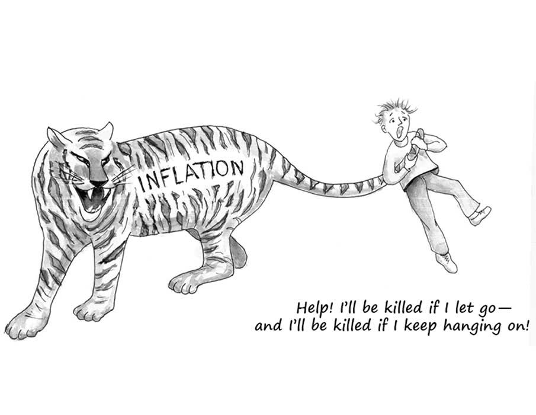

即使程度非常温和的通货膨胀也是危险的，因为它通过制造一种局面而束缚了那些负责政策的政治家的手脚，在该局面下，每当出现一个问题，再增多一点通货膨胀似乎是唯一简便的出路。（《自由宪章》，第二十一章，哈耶克）
通货膨胀是货币购买力的贬值。它最容易观察到的后果是经济体里所有东西都在不断地涨价。一单位货币（比如一美元）失去购买力指的是它失去了价值。当单位货币失去价值时，人们就需要更多单位的货币来购买商品和服务。换句话说，用该种货币衡量的物价上升了。
至今最常见的通胀原因是货币供应的增加。就像如果反常天气导致天上下了场钻石雨，钻石的价值就会下降，如果国家的货币当局增加货币供应，货币的价值就会下降。就像钻石雨会让想以商品交换钻石的人要求买家用更多钻石支付，货币供应的增加会让卖家要求买家支付更多的货币。
因此通胀的原因很简单，就是过多的货币供应。停止通胀的做法也很简单：停止像经济体注入新货币。不过虽然这事原则上很简单（不需要精通复杂的理论，也不需要解决复杂的数学问题），但实际上做起来经常很困难。原因在于货币供应的控制权掌握在政府官员手中。停止通胀的困难在于政治，难处之一是通胀往往最初就是由政客发起的，但还不止于此。
随着金本位于上世纪废除，政府开始发行法币。法币指的是仅仅由政府信誉支撑的货币。发行法币的政府只会把一些法币兑换成另一些面额不同但总额相同的法币。例如欧洲央行只可能把一张20欧元的钞票兑换成20张一欧元的，它不会给你换成金子、白银或者其他任何东西。
法币的一个结果是它诱惑着政府通过凭空创造货币来支付部分，有时候是很大一部分，政府开销。因为选民经常毫不犹豫地拒绝政府为了支持某些项目而进行的增税，而且选民一般无法立刻看出凭空创造货币的恶果，所以政府官员常常无法抵御通过创造货币来支持他们喜欢的项目的诱惑。
但我们在前一章讨论过，政府创造货币会带来严重的后果。向经济注入新货币的过程会扭曲相对价格并因此促成大量事后才能发现的错误经济决策。特别是新货币会使过多资源投资到那些新货币最先流经的行业。这些行业会过度扩张。
当人们发现这些行业过度夸张时，麻烦来了，投资者和企业家开始削减在这些行业的投入的资源。这些行业的萎缩不可避免地带来一段困难时期，尤其是这些行业裁员会导致失业率上升。
这段被裁工人重新找工作的时期，失业率常常高的不正常。因此政府面临着强烈的对失业率“做点什么”的政治压力。最简单的能做的“什么”就是政府可以继续维持通胀。通过继续向经济注入新货币，政府可以让那些最早获得新货币的行业的价格再多坚持一会。简单来说，政府可以通过继续增发货币制造通胀来推迟企业家和投资者发现那些最早获得新货币的行业其实已经产能过剩、过度扩张。
政客继续制造通胀的好处在于通过推迟人们发现过度扩张的行业，他可以让经济的虚假健康再多维持一会。这样这些政客下次选举时连任的概率就大一点。
但经济现实不可能仅仅靠不断印钱就掩盖住。当早期的新货币流遍经济体时，人们就会开始预期通胀的到来。所以想让过度扩张的行业的虚假繁荣不被投资者和企业家看出来，这些行业的产品价格必须比之前上升的还快——至少得比人们预期的通胀率快。
要让这些行业的价格涨得比通胀率还快，央行必须更频繁地向经济注入货币。如果央行真这么做，那最先得到新货币的行业相对其他行业的价格会继续维持在比它们“该有”的价格更高的地方。企业家和投资者可能会继续认为他们之前在这些“排在前面”的行业增加的投资是合理的。这些过热行业的回调被推迟了。本该现在上升的失业率被货币扩张抑制了，仍然走低。一切看着都挺好——就现在来说。
但最终更快的货币注入不可避免地导致更快的全面通胀。所有的价格都在上涨以追上最早获得新货币的行业的价格上涨速度。结果之一就是这些“排在前面”的行业不再发出错误的信号了。它们的价格开始显示出这些行业确实过热，也就是产能过剩了。所以货币当局阻止投资者撤出这些行业和裁人的唯一办法就是更激进的货币扩张。
很快货币当局就会意识到自己的困难处境。如果它停止扩大货币供应（甚至只是没能加速扩大货币供应），那些由先前新货币注入导致过度扩张的行业就会萎缩。随之而来的失业率上升会给政府带来“做些什么”以拯救就业的政治压力，这个“什么”可不能是劝告公众耐心等待行业重组直至经济更加稳定。加速地制造通胀是能让政府维持当前就业率的权宜之计。
但是加速的货币扩张导致通胀加速，这带来大量经济上的恶果。恶果之一是利率上升（银行和其他债权人会收取更高的利率因为他们预期明年货币的购买力会不如现在）。另一个恶果是工人因为担心工资涨幅追不上通胀，会现在就要求加薪，以应对将要来临的高速通胀。（这里的危险在于假如最终通胀率低于预期，工人的工资就涨过头了，导致一些工人失业或者一些雇主蒙受意外损失。）
更一般地，因为货币扩张并不会让所有价格同步上涨，所以通胀率越高，整个经济体的相对价格扭曲的就越厉害。某个价格相对其他价格扭曲的越厉害，它就越不能可靠地指导企业家、投资者和消费者做出正确的经济决策。因此通胀率越高，资源错配得就越严重。经济表现得越来越差。
要解决问题，货币当局必须停止向经济注入新货币，但这并不会立竿见影。不仅打消人们对未来通胀的预期需要时间，把工人和资源从过度扩张的行业转移到更能长期利用它们的行业也需要时间。通过持续制造通胀，货币当局可能可以把过度扩张的行业的萎缩稍稍推迟，但这也会让整个经济的通胀越来越糟。
从政治上说，按哈耶克的说法，我们可以把货币当局理解为抓住了“老虎的尾巴”。大家都同意一开始就不该去抓老虎的尾巴，但一旦有人抓了，那放开的话就得冒被老虎撕咬的风险。虽然继续抓着可以让他晚点面对被撕咬的风险，但也会让老虎越来越生气，所以当最终放开时（这是一定会发生的），老虎更可能更加狂暴地进行攻击。
可以理解，在任何时刻，那个抓着老虎尾巴的人都想再多抓一会来推迟被一只愤怒的大猫撕咬的危险。但每一次推迟都只会加剧最终松手时的危险。更糟的是，到了某个时刻老虎会变得太过狂怒而自己挣脱出来。把抓着这么长时间尾巴的人将会面临极大的危险。
停止通胀的难处和放开老虎尾巴的难处类似。二者的做法都很简单：停止印钞票（以停止通胀）或者松手（如果你正握着老虎的尾巴）。但考虑到这么做的后果，两种情况的做法其实又都很难，不仅要有预见到目前趋势若不改变情况只会不断恶化的智慧，还要有敢于选择尽快面对危险而不是不断推迟的勇气。不幸的是，停止通胀与抓老虎尾巴的比喻有一点不同，通过持续进行货币扩张，许多现在的政治人物可以逃脱最终的政治风险。今天通胀的恶果要在将来才会显现，而那时候很多今天的官员都已经平安退出政坛了。所以现在掌权的官员可以通过持续的货币扩张让经济显得比真实情况健康，同时把这个幻象的成本交给未来的官员承担。
政治上的这种对通胀的偏爱是应该对货币供应进行严格规范的正当理由。重回金本位是一个选项。或者采用米尔顿·弗里德曼(1912-2006)提议的著名的“货币规则”：只允许央行以某个很小的额度扩张货币（比如每年不超过3%）。哈耶克个人更青睐货币的非国家化，即货币发行和货币供应的控制完全不让政府插手。相互竞争的市场力量会负起供应稳健货币的责任。（弗里德曼本人在临死前也变得对央行极度怀疑，并主张应该彻底剥夺政府控制货币供应的所有权力和责任）不管具体用那种办法来消除货币供应上政府的自由裁量权，这件事都应该是追求稳定、持久、广泛繁荣的经济的人的优先目标。
就像建议戒酒者彻底回避酒精是明智的一样，就像我们会明智地建议寻求刺激的人永远不要去抓老虎尾巴，我们也应该明智地建议人们永远不要允许他们的政府在货币供应上行使自由裁量权。只有这样才能避免通胀和相应的诸多经济恶果。